- 00 开篇词 迎难而上，做云原生时代的弄潮儿.md.html
- 00 课前准备 动手实践才是最好的学习方式.md.html
- 01 初识容器：万事开头难.md.html
- 02 被隔离的进程：一起来看看容器的本质.md.html
- 03 容器化的应用：会了这些你就是Docker高手.md.html
- 04 创建容器镜像：如何编写正确、高效的Dockerfile.md.html
- 05 镜像仓库：该怎样用好Docker Hub这个宝藏.md.html
- 06 打破次元壁：容器该如何与外界互联互通.md.html
- 07 实战演练：玩转Docker.md.html
- 08 视频：入门篇实操总结.md.html
- 09 走近云原生：如何在本机搭建小巧完备的Kubernetes环境.md.html
- 10 自动化的运维管理：探究Kubernetes工作机制的奥秘.md.html
- 11 YAML：Kubernetes世界里的通用语.md.html
- 12 Pod：如何理解这个Kubernetes里最核心的概念？.md.html
- 13 Job_CronJob：为什么不直接用Pod来处理业务？.md.html
- 14 ConfigMap_Secret：怎样配置、定制我的应用.md.html
- 15 实战演练：玩转Kubernetes（1）.md.html
- 16 视频：初级篇实操总结.md.html
- 17 更真实的云原生：实际搭建多节点的Kubernetes集群.md.html
- 18 Deployment：让应用永不宕机.md.html
- 19 Daemonset：忠实可靠的看门狗.md.html
- 20 Service：微服务架构的应对之道.md.html
- 21 Ingress：集群进出流量的总管.md.html
- 22 实战演练：玩转Kubernetes（2）.md.html
- 23 视频：中级篇实操总结.md.html
- 24 PersistentVolume：怎么解决数据持久化的难题？.md.html
- 25 PersistentVolume + NFS：怎么使用网络共享存储？.md.html
- 26 StatefulSet：怎么管理有状态的应用？.md.html
- 27 滚动更新：如何做到平滑的应用升级降级？.md.html
- 28 应用保障：如何让Pod运行得更健康？.md.html
- 29 集群管理：如何用名字空间分隔系统资源？.md.html
- 30 系统监控：如何使用Metrics Server和Prometheus？.md.html
- 31 网络通信：CNI是怎么回事？又是怎么工作的？.md.html
- 32 实战演练：玩转Kubernetes（3）.md.html
- 33 视频：高级篇实操总结.md.html
- 加餐 docker-compose：单机环境下的容器编排工具.md.html
- 加餐 谈谈Kong Ingress Controller.md.html
- 结束语 是终点，更是起点.md.html
- 捐赠
25 PersistentVolume + NFS：怎么使用网络共享存储？
你好，我是Chrono。
在上节课里我们看到了Kubernetes里的持久化存储对象PersistentVolume、PersistentVolumeClaim、StorageClass，把它们联合起来就可以为Pod挂载一块“虚拟盘”，让Pod在其中任意读写数据。
不过当时我们使用的是HostPath，存储卷只能在本机使用，而Kubernetes里的Pod经常会在集群里“漂移”，所以这种方式不是特别实用。
要想让存储卷真正能被Pod任意挂载，我们需要变更存储的方式，不能限定在本地磁盘，而是要改成网络存储，这样Pod无论在哪里运行，只要知道IP地址或者域名，就可以通过网络通信访问存储设备。
网络存储是一个非常热门的应用领域，有很多知名的产品，比如AWS、Azure、Ceph，Kubernetes还专门定义了CSI（Container Storage Interface）规范，不过这些存储类型的安装、使用都比较复杂，在我们的实验环境里部署难度比较高。
所以今天的这次课里，我选择了相对来说比较简单的NFS系统（Network File System），以它为例讲解如何在Kubernetes里使用网络存储，以及静态存储卷和动态存储卷的概念。
如何安装NFS服务器
作为一个经典的网络存储系统，NFS有着近40年的发展历史，基本上已经成为了各种UNIX系统的标准配置，Linux自然也提供对它的支持。
NFS采用的是Client/Server架构，需要选定一台主机作为Server，安装NFS服务端；其他要使用存储的主机作为Client，安装NFS客户端工具。
所以接下来，我们在自己的Kubernetes集群里再增添一台名字叫Storage的服务器，在上面安装NFS，实现网络存储、共享网盘的功能。不过这台Storage也只是一个逻辑概念，我们在实际安装部署的时候完全可以把它合并到集群里的某台主机里，比如这里我就复用了[第17讲]里的Console。
新的网络架构如下图所示：
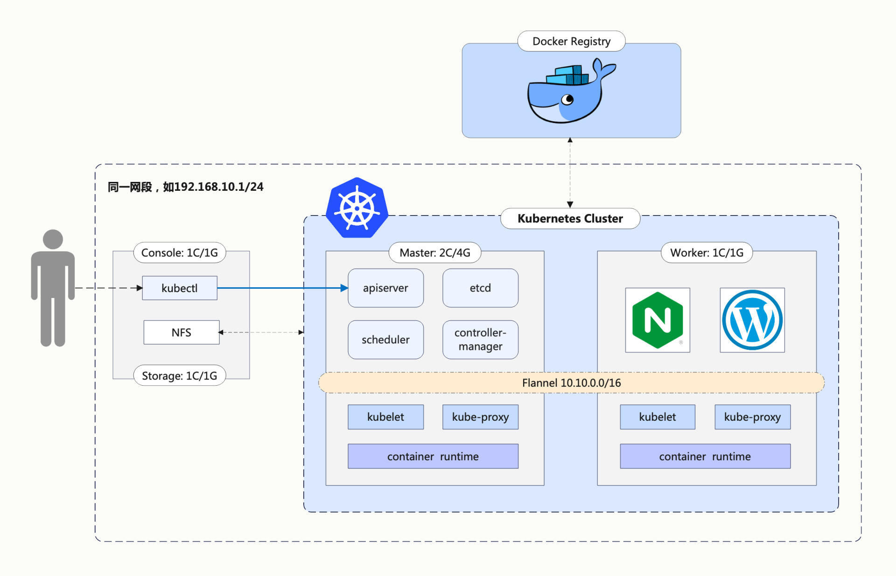
在Ubuntu系统里安装NFS服务端很容易，使用apt即可：
sudo apt -y install nfs-kernel-server
安装好之后，你需要给NFS指定一个存储位置，也就是网络共享目录。一般来说，应该建立一个专门的 /data 目录，这里为了简单起见，我就使用了临时目录 /tmp/nfs：
mkdir -p /tmp/nfs
接下来你需要配置NFS访问共享目录，修改 /etc/exports，指定目录名、允许访问的网段，还有权限等参数。这些规则比较琐碎，和我们的Kubernetes课程关联不大，我就不详细解释了，你只要把下面这行加上就行，注意目录名和IP地址要改成和自己的环境一致：
/tmp/nfs 192.168.10.0/24(rw,sync,no_subtree_check,no_root_squash,insecure)
改好之后，需要用 exportfs -ra 通知NFS，让配置生效，再用 exportfs -v 验证效果：
sudo exportfs -ra
sudo exportfs -v
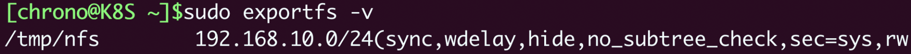
现在，你就可以使用 systemctl 来启动NFS服务器了：
sudo systemctl start nfs-server
sudo systemctl enable nfs-server
sudo systemctl status nfs-server
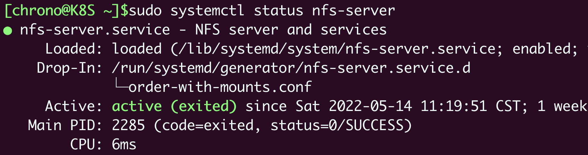
你还可以使用命令 showmount 来检查NFS的网络挂载情况：
showmount -e 127.0.0.1
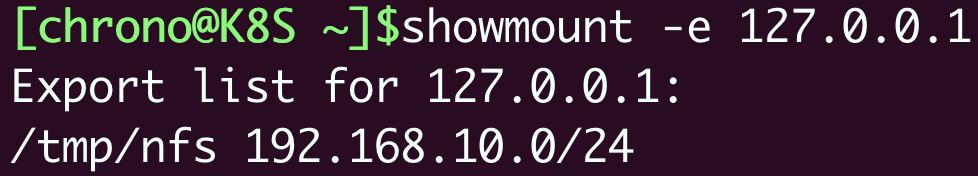
如何安装NFS客户端
有了NFS服务器之后，为了让Kubernetes集群能够访问NFS存储服务，我们还需要在每个节点上都安装NFS客户端。
这项工作只需要一条apt命令，不需要额外的配置：
sudo apt -y install nfs-common
同样，在节点上可以用 showmount 检查NFS能否正常挂载，注意IP地址要写成NFS服务器的地址，我在这里就是“192.168.10.208”：
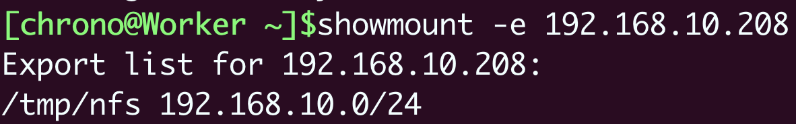
现在让我们尝试手动挂载一下NFS网络存储，先创建一个目录 /tmp/test 作为挂载点：
mkdir -p /tmp/test
然后用命令 mount 把NFS服务器的共享目录挂载到刚才创建的本地目录上：
sudo mount -t nfs 192.168.10.208:/tmp/nfs /tmp/test
最后测试一下，我们在 /tmp/test 里随便创建一个文件，比如 x.yml：
touch /tmp/test/x.yml
再回到NFS服务器，检查共享目录 /tmp/nfs，应该会看到也出现了一个同样的文件 x.yml，这就说明NFS安装成功了。之后集群里的任意节点，只要通过NFS客户端，就能把数据写入NFS服务器，实现网络存储。
如何使用NFS存储卷
现在我们已经为Kubernetes配置好了NFS存储系统，就可以使用它来创建新的PV存储对象了。
先来手工分配一个存储卷，需要指定 storageClassName 是 nfs，而 accessModes 可以设置成 ReadWriteMany，这是由NFS的特性决定的，它支持多个节点同时访问一个共享目录。
因为这个存储卷是NFS系统，所以我们还需要在YAML里添加 nfs 字段，指定NFS服务器的IP地址和共享目录名。
这里我在NFS服务器的 /tmp/nfs 目录里又创建了一个新的目录 1g-pv，表示分配了1GB的可用存储空间，相应的，PV里的 capacity 也要设置成同样的数值，也就是 1Gi。
把这些字段都整理好后，我们就得到了一个使用NFS网络存储的YAML描述文件：
apiVersion: v1
kind: PersistentVolume
metadata:
name: nfs-1g-pv
spec:
storageClassName: nfs
accessModes:
- ReadWriteMany
capacity:
storage: 1Gi
nfs:
path: /tmp/nfs/1g-pv
server: 192.168.10.208
现在就可以用命令 kubectl apply 来创建PV对象，再用 kubectl get pv 查看它的状态：
kubectl apply -f nfs-static-pv.yml
kubectl get pv
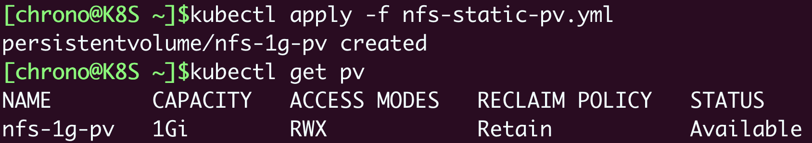
再次提醒你注意，spec.nfs 里的IP地址一定要正确，路径一定要存在（事先创建好），否则Kubernetes按照PV的描述会无法挂载NFS共享目录，PV就会处于“pending”状态无法使用。
有了PV，我们就可以定义申请存储的PVC对象了，它的内容和PV差不多，但不涉及NFS存储的细节，只需要用 resources.request 来表示希望要有多大的容量，这里我写成1GB，和PV的容量相同：
apiVersion: v1
kind: PersistentVolumeClaim
metadata:
name: nfs-static-pvc
spec:
storageClassName: nfs
accessModes:
- ReadWriteMany
resources:
requests:
storage: 1Gi
创建PVC对象之后，Kubernetes就会根据PVC的描述，找到最合适的PV，把它们“绑定”在一起，也就是存储分配成功：
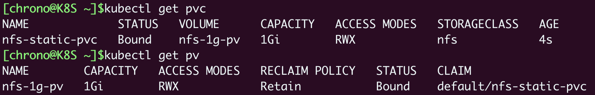
我们再创建一个Pod，把PVC挂载成它的一个volume，具体的做法和[上节课]是一样的，用 persistentVolumeClaim 指定PVC的名字就可以了：
apiVersion: v1
kind: Pod
metadata:
name: nfs-static-pod
spec:
volumes:
- name: nfs-pvc-vol
persistentVolumeClaim:
claimName: nfs-static-pvc
containers:
- name: nfs-pvc-test
image: nginx:alpine
ports:
- containerPort: 80
volumeMounts:
- name: nfs-pvc-vol
mountPath: /tmp
Pod、PVC、PV和NFS存储的关系可以用下图来形象地表示，你可以对比一下HostPath PV的用法，看看有什么不同：
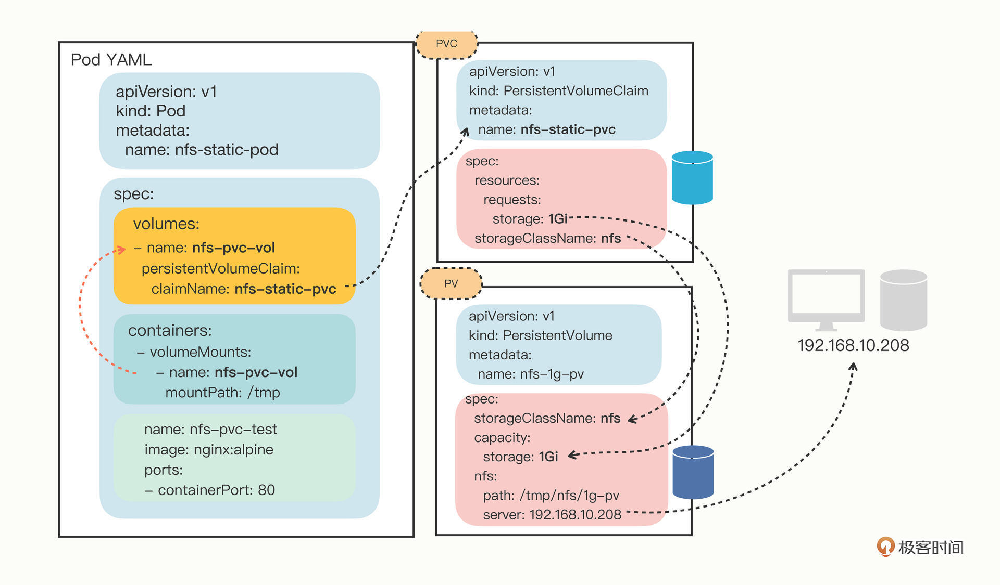
因为我们在PV/PVC里指定了 storageClassName 是 nfs，节点上也安装了NFS客户端，所以Kubernetes就会自动执行NFS挂载动作，把NFS的共享目录 /tmp/nfs/1g-pv 挂载到Pod里的 /tmp，完全不需要我们去手动管理。
最后还是测试一下，用 kubectl apply 创建Pod之后，我们用 kubectl exec 进入Pod，再试着操作NFS共享目录：
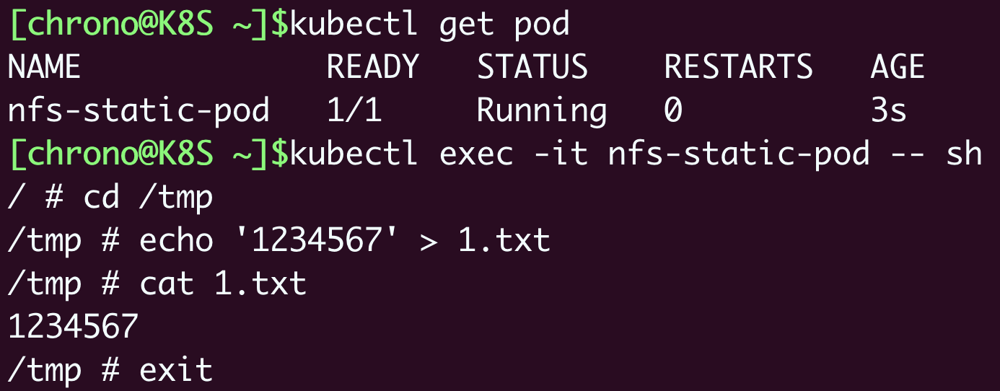
退出Pod，再看一下NFS服务器的 /tmp/nfs/1g-pv 目录，你就会发现Pod里创建的文件确实写入了共享目录：
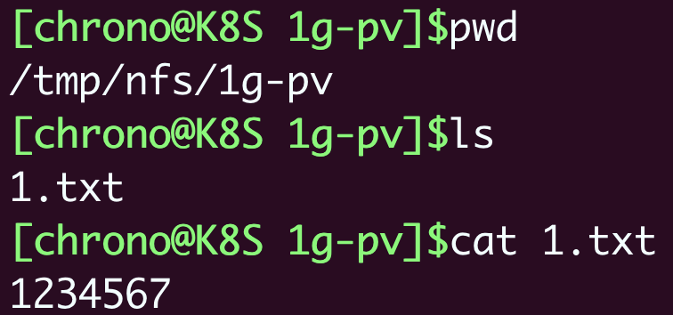
而且更好的是，因为NFS是一个网络服务，不会受Pod调度位置的影响，所以只要网络通畅，这个PV对象就会一直可用，数据也就实现了真正的持久化存储。
如何部署NFS Provisoner
现在有了NFS这样的网络存储系统，你是不是认为Kubernetes里的数据持久化问题就已经解决了呢？
对于这个问题，我觉得可以套用一句现在的流行语：“解决了，但没有完全解决。”
说它“解决了”，是因为网络存储系统确实能够让集群里的Pod任意访问，数据在Pod销毁后仍然存在，新创建的Pod可以再次挂载，然后读取之前写入的数据，整个过程完全是自动化的。
说它“没有完全解决”，是因为PV还是需要人工管理，必须要由系统管理员手动维护各种存储设备，再根据开发需求逐个创建PV，而且PV的大小也很难精确控制，容易出现空间不足或者空间浪费的情况。
在我们的这个实验环境里，只有很少的PV需求，管理员可以很快分配PV存储卷，但是在一个大集群里，每天可能会有几百几千个应用需要PV存储，如果仍然用人力来管理分配存储，管理员很可能会忙得焦头烂额，导致分配存储的工作大量积压。
那么能不能让创建PV的工作也实现自动化呢？或者说，让计算机来代替人类来分配存储卷呢？
这个在Kubernetes里就是“动态存储卷”的概念，它可以用StorageClass绑定一个Provisioner对象，而这个Provisioner就是一个能够自动管理存储、创建PV的应用，代替了原来系统管理员的手工劳动。
有了“动态存储卷”的概念，前面我们讲的手工创建的PV就可以称为“静态存储卷”。
目前，Kubernetes里每类存储设备都有相应的Provisioner对象，对于NFS来说，它的Provisioner就是“NFS subdir external provisioner”，你可以在GitHub上找到这个项目（https://github.com/kubernetes-sigs/nfs-subdir-external-provisioner）。
NFS Provisioner也是以Pod的形式运行在Kubernetes里的，在GitHub的 deploy 目录里是部署它所需的YAML文件，一共有三个，分别是rbac.yaml、class.yaml和deployment.yaml。
不过这三个文件只是示例，想在我们的集群里真正运行起来还要修改其中的两个文件。
第一个要修改的是rbac.yaml，它使用的是默认的 default 名字空间，应该把它改成其他的名字空间，避免与普通应用混在一起，你可以用“查找替换”的方式把它统一改成 kube-system。
第二个要修改的是deployment.yaml，它要修改的地方比较多。首先要把名字空间改成和rbac.yaml一样，比如是 kube-system，然后重点要修改 volumes 和 env 里的IP地址和共享目录名，必须和集群里的NFS服务器配置一样。
按照我们当前的环境设置，就应该把IP地址改成 192.168.10.208，目录名改成 /tmp/nfs：
spec:
template:
spec:
serviceAccountName: nfs-client-provisioner
containers:
...
env:
- name: PROVISIONER_NAME
value: k8s-sigs.io/nfs-subdir-external-provisioner
- name: NFS_SERVER
value: 192.168.10.208 #改IP地址
- name: NFS_PATH
value: /tmp/nfs #改共享目录名
volumes:
- name: nfs-client-root
nfs:
server: 192.168.10.208 #改IP地址
Path: /tmp/nfs #改共享目录名
还有一件麻烦事，deployment.yaml的镜像仓库用的是gcr.io，拉取很困难，而国内的镜像网站上偏偏还没有它，为了让实验能够顺利进行，我不得不“曲线救国”，把它的镜像转存到了Docker Hub上。
所以你还需要把镜像的名字由原来的“k8s.gcr.io/sig-storage/nfs-subdir-external-provisioner:v4.0.2”改成“chronolaw/nfs-subdir-external-provisioner:v4.0.2”，其实也就是变动一下镜像的用户名而已。
把这两个YAML修改好之后，我们就可以在Kubernetes里创建NFS Provisioner了：
kubectl apply -f rbac.yaml
kubectl apply -f class.yaml
kubectl apply -f deployment.yaml
使用命令 kubectl get，再加上名字空间限定 -n kube-system，就可以看到NFS Provisioner在Kubernetes里运行起来了。
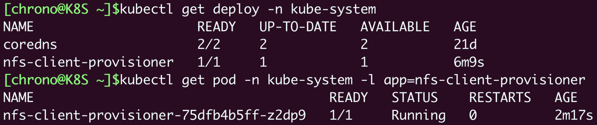
如何使用NFS动态存储卷
比起静态存储卷，动态存储卷的用法简单了很多。因为有了Provisioner，我们就不再需要手工定义PV对象了，只需要在PVC里指定StorageClass对象，它再关联到Provisioner。
我们来看一下NFS默认的StorageClass定义：
apiVersion: storage.k8s.io/v1
kind: StorageClass
metadata:
name: nfs-client
provisioner: k8s-sigs.io/nfs-subdir-external-provisioner
parameters:
archiveOnDelete: "false"
YAML里的关键字段是 provisioner，它指定了应该使用哪个Provisioner。另一个字段 parameters 是调节Provisioner运行的参数，需要参考文档来确定具体值，在这里的 archiveOnDelete: "false" 就是自动回收存储空间。
理解了StorageClass的YAML之后，你也可以不使用默认的StorageClass，而是根据自己的需求，任意定制具有不同存储特性的StorageClass，比如添加字段 onDelete: "retain" 暂时保留分配的存储，之后再手动删除：
apiVersion: storage.k8s.io/v1
kind: StorageClass
metadata:
name: nfs-client-retained
provisioner: k8s-sigs.io/nfs-subdir-external-provisioner
parameters:
onDelete: "retain"
接下来我们定义一个PVC，向系统申请10MB的存储空间，使用的StorageClass是默认的 nfs-client：
apiVersion: v1
kind: PersistentVolumeClaim
metadata:
name: nfs-dyn-10m-pvc
spec:
storageClassName: nfs-client
accessModes:
- ReadWriteMany
resources:
requests:
storage: 10Mi
写好了PVC，我们还是在Pod里用 volumes 和 volumeMounts 挂载，然后Kubernetes就会自动找到NFS Provisioner，在NFS的共享目录上创建出合适的PV对象：
apiVersion: v1
kind: Pod
metadata:
name: nfs-dyn-pod
spec:
volumes:
- name: nfs-dyn-10m-vol
persistentVolumeClaim:
claimName: nfs-dyn-10m-pvc
containers:
- name: nfs-dyn-test
image: nginx:alpine
ports:
- containerPort: 80
volumeMounts:
- name: nfs-dyn-10m-vol
mountPath: /tmp
使用 kubectl apply 创建好PVC和Pod，让我们来查看一下集群里的PV状态：
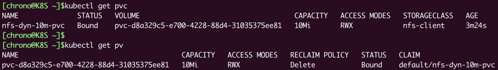
从截图你可以看到，虽然我们没有直接定义PV对象，但由于有NFS Provisioner，它就自动创建一个PV，大小刚好是在PVC里申请的10MB。
如果你这个时候再去NFS服务器上查看共享目录，也会发现多出了一个目录，名字与这个自动创建的PV一样，但加上了名字空间和PVC的前缀：
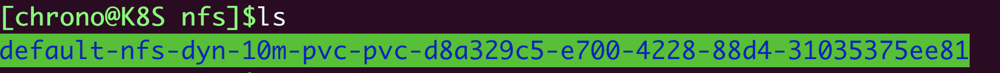
我还是把Pod、PVC、StorageClass和Provisioner的关系画成了一张图，你可以清楚地看出来这些对象的关联关系，还有Pod是如何最终找到存储设备的：
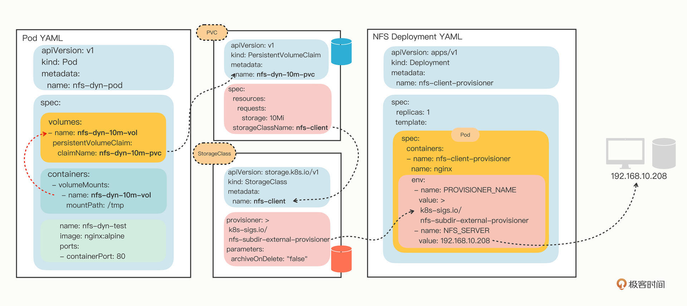
小结
好了，今天的这节课里我们继续学习PV/PVC，引入了网络存储系统，以NFS为例研究了静态存储卷和动态存储卷的用法，其中的核心对象是StorageClass和Provisioner。
我再小结一下今天的要点：
- 在Kubernetes集群里，网络存储系统更适合数据持久化，NFS是最容易使用的一种网络存储系统，要事先安装好服务端和客户端。
- 可以编写PV手工定义NFS静态存储卷，要指定NFS服务器的IP地址和共享目录名。
- 使用NFS动态存储卷必须要部署相应的Provisioner，在YAML里正确配置NFS服务器。
- 动态存储卷不需要手工定义PV，而是要定义StorageClass，由关联的Provisioner自动创建PV完成绑定。
课下作业
最后是课下作业时间，给你留两个思考题：
- 动态存储卷相比静态存储卷有什么好处？有没有缺点？
- StorageClass在动态存储卷的分配过程中起到了什么作用？
期待你的思考。如果觉得有收获，也欢迎你分享给朋友一起讨论。我们下节课再见。
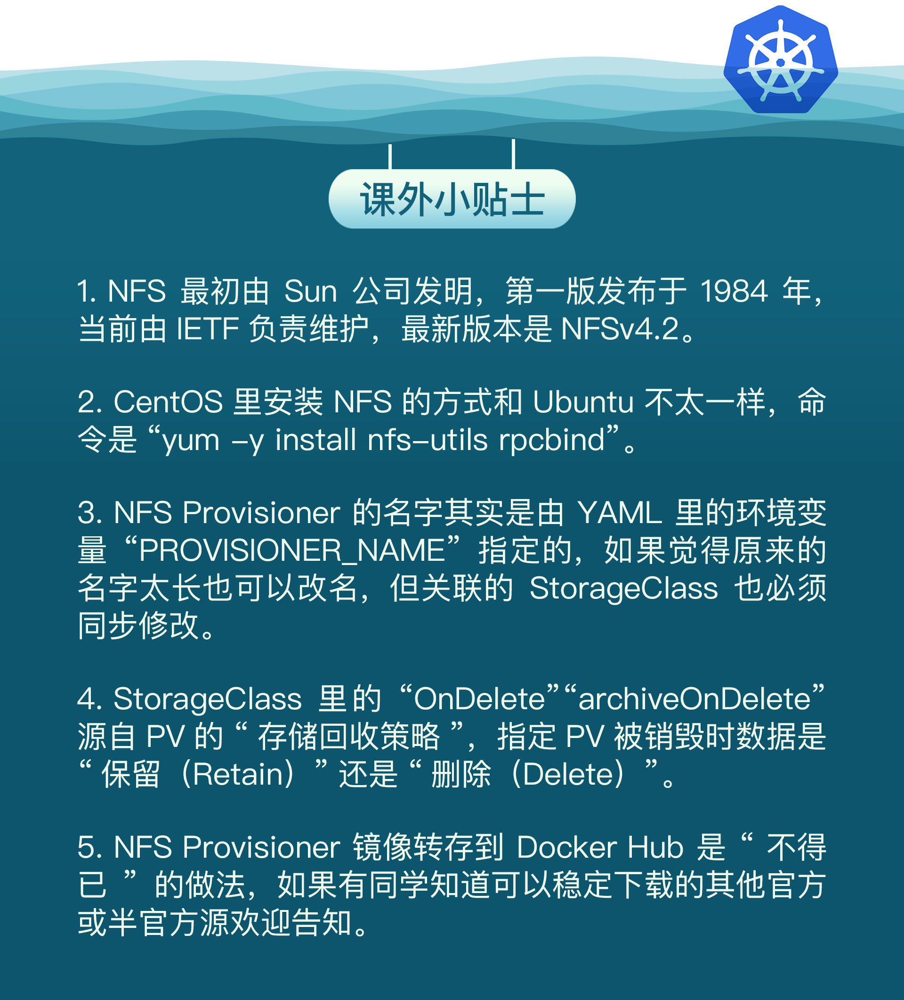
© 2019 - 2023 Liangliang Lee. Powered by gin and hexo-theme-book.